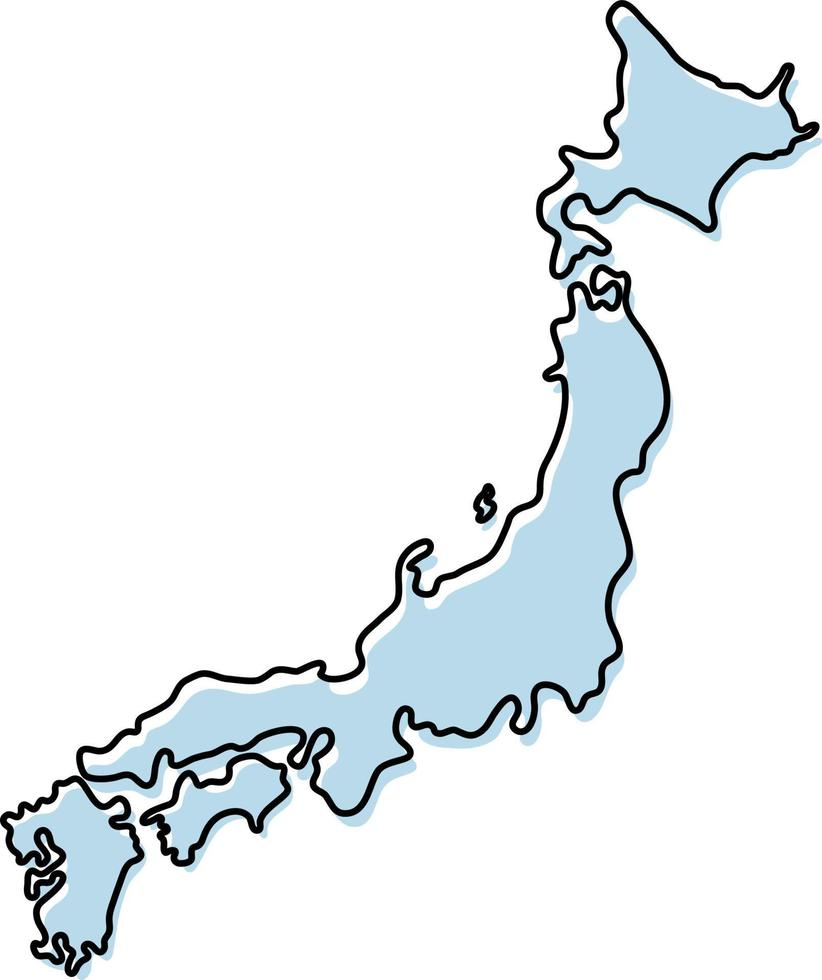
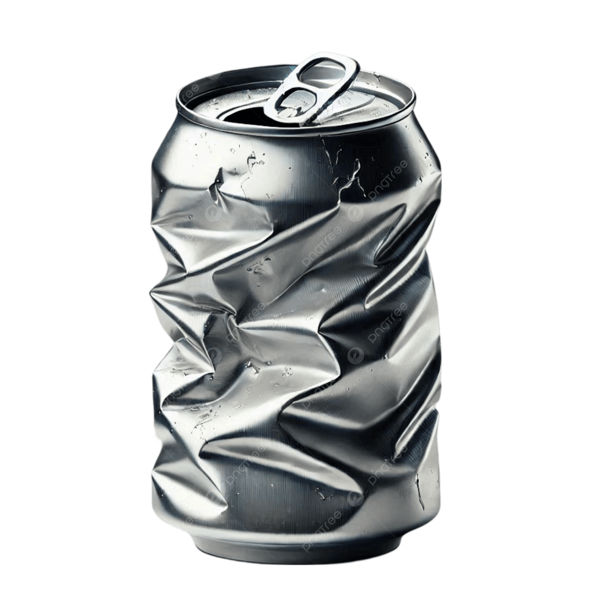
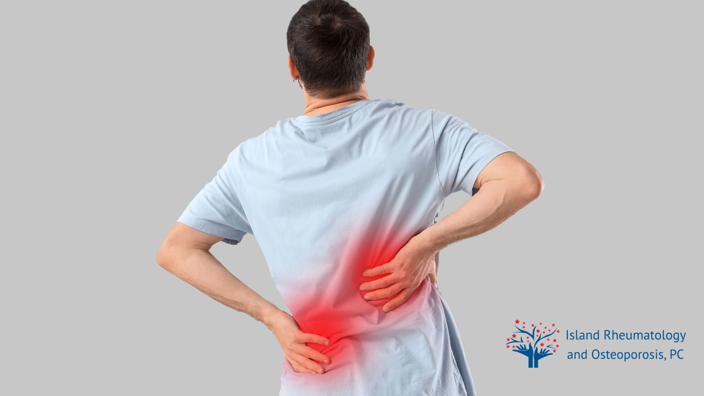
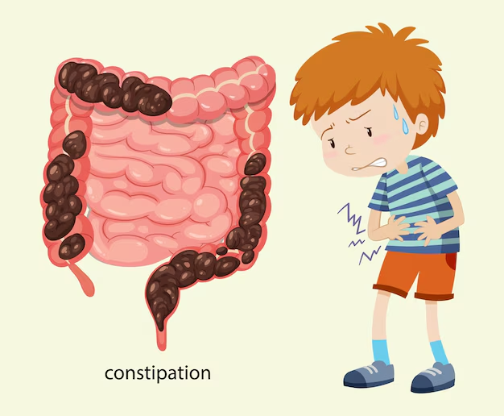
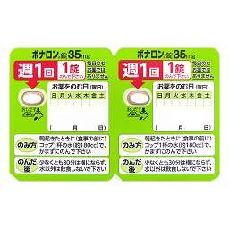
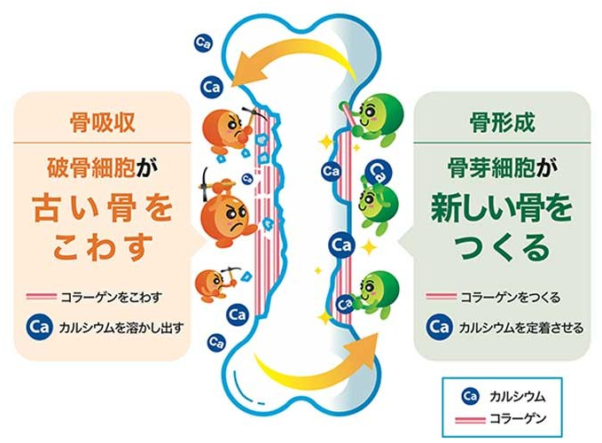
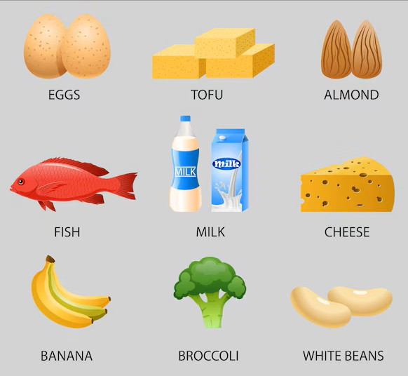
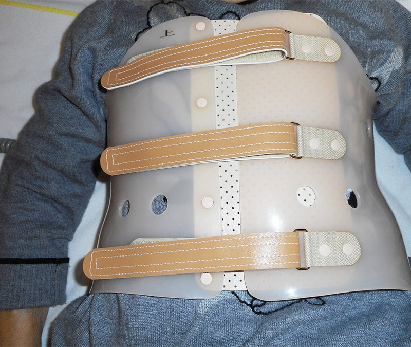

～いつまでも健康に歩くために～
日本の70代女性の
「3人に1人」
がすでに経験しています！
豆知識：どんな時に骨折する？
布団の上げ下ろし、お辞儀、くしゃみなど、日常のささいな動作がきっかけになります。

「いつのまにか」進む3つの危険信号
背中や腰が
丸くなってきた
起き上がる時に
腰がピキッと痛む
以前より
身長が縮んだ
転ばなくても、自分の重みや
軽いお辞儀だけで、
背骨が「空き缶」のようにつぶれてしまいます。

1つの骨折が、次々と不調を呼び寄せます
背骨の骨折で動けなくなる
筋力急激に低下する
寝たきり・認知症の引き金に
最初の「1枚」を倒さないことが最も重要です！
背中が丸く曲がってしまうと...
内臓が強く圧迫されます！
・胃が押されて
「逆流性食道炎」に
・肺が広がらず
「息苦しさ」の原因に

お腹の圧迫が便秘を引き起こす
背骨がつぶれて前かがみになると、お腹（腹腔）が狭くなり、胃腸が強く圧迫されて動きが鈍くなります。
いきみによる「再骨折」に注意！
便秘でトイレで強く「いきむ」と、背骨に瞬間的に大きな圧力がかかり、新たな圧迫骨折を誘発する原因になります。便秘対策もお薬と同じくらい大切です。

ボナロン錠35mg
週に1回だけ服用する、骨粗鬆症（こつそしょうしょう）の代表的な治療薬です。
主な効果・働き
骨が溶け出すのを強力に抑え、骨の密度を高めて「つぶれにくい骨」を作ります。骨折の予防に非常に高い効果が証明されています。

効果をしっかり出し、胃や食道を守るための「3つの約束」
1. 朝起きてすぐに
朝一番、食事や水分をとる前に、空腹の状態で服用します。
2. コップ1杯の水で
約180mlの水で飲みます。お茶やジュース、硬水は避けてください。
3. 30分は横にならない
服用後30分は横にならず、飲食や他の薬の服用も避けてください。
骨は毎日生まれ変わる！
実は、あなたの骨は「約3年」ですべて新しい骨入れ替わっています。
古い骨を壊す「破骨細胞」と、新しい骨を作る「骨芽細胞」が、毎日バランスよくコツコツ働いているのです。
今からでも、骨は新しく強く育てられますよ！

「いつのまにか骨折」は痛まない？
実は、圧迫骨折をした人の約３分の２は、骨折した瞬間の激しい痛みがありません。
「ちょっと腰が重いな」「年のせいかな」と思っているうちに、背骨がどんどんつぶれて変形してしまうのが、この病気の本当に怖いところです。
骨の材料と、吸収を助ける栄養素がカギ！
① カルシウム（骨の材料）
・牛乳、乳製品、小魚、豆腐、小松菜など
② ビタミンD（カルシウムの吸収を促進）
・鮭、サバ、マイタケ、しいたけなど
③ ビタミンK（骨へのカルシウム定着を助ける）
・納豆、ほうれん草、ブロッコリーなど
3つの栄養素をバランスよく摂り、強い骨を作りましょう！

骨折してしまったら、コルセットが「お守り」です
正しい装着のポイント
1. 骨が固まるまで、医師の指示通り毎日つける
2. 緩まないように、お腹を少しへこませて締める
3. 皮膚の赤みや痛みがあれば、すぐに相談する

椅子に座ったまま骨刺激！
1. 椅子に深く腰掛け、背筋をピンと伸ばします。
2. 両足のかかとを同時にグッと引き上げます。
3. ストンと一気にかかとを床に落とします。
※1日30回を目安に。骨に心地よい振動（刺激）が伝わることで、骨を強くするスイッチが入ります！
問題 カルシウムの吸収を助ける「ビタミンD」は、食事以外にどうやって体内で作られるでしょう？
正しいと思うものを
選んでクリックしてね！
解説：
ビタミンDは、日光（紫外線）を浴びることで皮膚でも作られます。1日15〜30分程度、木陰で過ごしたり散歩をしたりするだけで十分な量が作られ、骨がグンと強くなります！
「いつのまにか骨折」を早期発見する！
身長低下や起き上がる時の軽い腰痛を見逃さず、体のサインに早く気づくことがドミノ骨折を防ぐ第一歩です。
お薬の正しい服用と「便秘対策」を徹底する！
ボナロンは朝一番にコップ1杯の水で飲み、30分は横にならない。また、トイレでの「いきみ」による再骨折を防ぐため便秘対策も行いましょう。
食事・運動・コルセットで骨を育てる！
カルシウムやビタミンを意識した食事、座ったままできる「かかと落とし」で骨に刺激を与え、骨折時はコルセットで背骨を支えます。
正しい姿勢や予防のための動作を動画で確認しましょう。
※再生ボタンを押すと、オフライン環境でも動画が再生されます。
あなたの街の薬剤師が、
骨の健康とお薬を優しくサポートします。
笑顔で元気に、のびのびと過ごしましょう！
ご質問も大歓迎です